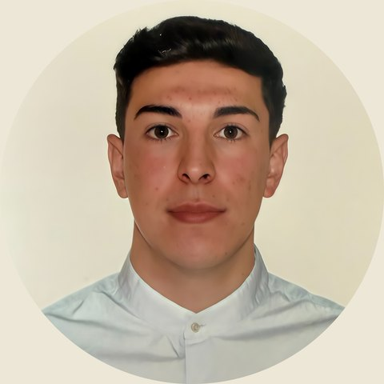

Ingeniero de software en Madrid. Construyo sistemas de datos e IA y los llevo de la idea a producción. Ahora trabajo en Airbus Defence and Space.Software engineer in Madrid. I build data and AI systems and take them from idea to production. I currently work at Airbus Defence and Space.
Me gusta que las cosas funcionen de principio a fin: diseñar el sistema, escribir el código, desplegarlo y medir si de verdad responde bien.I like things to work end to end: designing the system, writing the code, deploying it and measuring whether it really performs.
La mayoría de mis proyectos viven en un servidor Ubuntu que administro en casa, con Docker, Tailscale y modelos de lenguaje que corren en local con Ollama.Most of my projects live on an Ubuntu server I run at home, with Docker, Tailscale and language models running locally through Ollama.
Trabajo sobre todo con Python, FastAPI y PostgreSQL, y con React cuando hace falta una interfaz.I mostly work with Python, FastAPI and PostgreSQL, plus React when a project needs an interface.
Cada proyecto de esta página viene con una figura que funciona con su lógica real. Puedes tocarlas.Every project on this page comes with a figure that runs on its real logic. Go ahead and play with them.
Asistente sobre documentos con búsqueda híbrida y agentesDocument assistant with hybrid search and agents
Responde preguntas sobre tus propios documentos y te enseña de dónde ha sacado cada respuesta.It answers questions about your own documents and shows where each answer came from.
La búsqueda vectorial entiende el significado pero pierde los términos exactos; la de texto completo hace lo contrario. DocuChat lanza las dos y fusiona sus rankings con Reciprocal Rank Fusion, así que arriba quedan los fragmentos en los que ambas coinciden. Prueba los tres modos en la figura.Vector search understands meaning but misses exact terms; full-text search does the opposite. DocuChat runs both and fuses their rankings with Reciprocal Rank Fusion, so the passages both agree on rise to the top. Try the three modes in the figure.
Agentes con llamadas a herramientas sobre Ollama en local o Gemini.Agents with tool calling on local Ollama or Gemini.
Cada consulta registra latencia, herramientas y fragmentos usados.Every query logs latency, tools and passages used.
Evaluación recall@k para saber si un cambio mejora de verdad.Recall@k evaluation to know whether a change really helps.
Cómo se ordenan los resultadosHow results get ranked
Política de RR. HH. de ejemplo, RRF con k = 60Sample HR policy, RRF with k = 60
¿Cuántos días de vacaciones me corresponden?How many days of holiday am I entitled to?
Analítica deportivaSports analytics
Más de 16 ligas de fútbol y los circuitos ATP y WTA16+ football leagues and the ATP and WTA tours
Estimo los goles esperados de cada equipo y de ahí sale la probabilidad de cada marcador.I estimate each team's expected goals and derive the probability of every scoreline.
Un proceso registra las cuotas en tiempo real para construir un histórico de líneas de cierre, que es contra lo que valido los modelos. Mueve los goles esperados de la figura y verás cómo cambia todo el reparto.A separate process logs live odds to build a closing-line history, which is what I validate the models against. Move the expected goals in the figure and watch the whole distribution change.
DeporteSport
ModelosModels
FútbolFootball
Poisson, Dixon-Coles
TenisTennis
Elo por superficie, regresión logísticaSurface Elo, logistic regression
MercadoMarket
Registro de cuotas y líneas de cierreOdds logging and closing lines
Probabilidad de cada marcadorProbability of every scoreline
Poisson independiente, en porcentajeIndependent Poisson, in percent
Filas: goles del local. Columnas: del visitante.Rows: home goals. Columns: away goals.
LocalHome
EmpateDraw
VisitanteAway
Scoring bursátilStock scoring
Análisis fundamental automatizado con n8nAutomated fundamental analysis with n8n
Puntúa empresas por sus fundamentales y me avisa por Telegram cuando alguna merece una segunda mirada.It scores companies on fundamentals and pings me on Telegram when one deserves a second look.
Combina PER, ROE, deuda sobre EBITDA y margen neto en una sola nota. Un flujo de n8n lanza el análisis de forma periódica, envía las alertas y deja los resultados en un panel hecho con FastAPI. La empresa de la figura es ficticia.It combines P/E, ROE, debt to EBITDA and net margin into a single score. An n8n workflow runs the analysis on a schedule, sends the alerts and publishes results to a FastAPI dashboard. The company in the figure is fictional.
Python, FastAPI, n8n, Telegram
Empresa EjemploExample Corp
Nota compuesta sobre 10Composite score out of 10
7,87.8 / 10Supera tu umbralAbove threshold
PER12,412.4
ROE18 %18%
Deuda / EBITDADebt / EBITDA1,61.6
Margen netoNet margin11 %11%
Empresa Ejemplo obtiene 7,8 y supera tu umbral de 7. Ver detalle en el panel.Example Corp scores 7.8, above your threshold of 7. See details in the dashboard.Telegram, alerta automáticaTelegram, automated alert
RecuerdaMed
Trabajo de fin de grado, Android e iOSBachelor's thesis, Android and iOS
Ayuda a los pacientes a no olvidar su medicación y mantiene informados a quienes les cuidan.It helps patients keep up with their medication and keeps their caregivers informed.
El paciente recibe un aviso a cada hora de toma y la confirma con un toque. Si una toma se queda sin confirmar, su cuidador recibe una notificación. Un único código para las dos plataformas.Patients get a reminder at each dose and confirm it with one tap. If a dose goes unconfirmed, their caregiver is notified. One codebase for both platforms.
Si no se confirma a las 21:30, avisaremos a María, su cuidadora.If not confirmed by 21:30, we'll notify María, the caregiver.
App de comunidadesCommunity app
Ingeniería del Software y Práctica ProfesionalSoftware Engineering and Professional Practice
Fui jefe de proyecto de un equipo de 18 personas y presentaba los avances cada semana en formato pitch.I was project manager of an 18-person team and pitched our progress every week.
La aplicación permitía a los vecinos reportar incidencias, reservar zonas comunes, chatear entre ellos y obtener las actas de las reuniones transcritas a partir de una grabación de voz.The app let residents report incidents, book shared spaces, chat with each other and get meeting minutes transcribed from a voice recording.
Comunidad Los OlivosLos Olivos residents
Comunidad de ejemploSample community
Fuga de agua en el garajeWater leak in the garageIncidencia, abierta hace 2 hIncident, opened 2 h agoEn cursoIn progress
Pista de pádel, sábado 11:00Padel court, Saturday 11:00Reserva de zona comúnShared space bookingConfirmadaConfirmed
Acta de la junta de octubreOctober meeting minutesTranscrita desde la grabaciónTranscribed from the recordingListaReady
18 personas en el equipo18 people on the team
Sobre míAbout me

Soy de Sevilla y me gradué en Ingeniería del Software en su universidad. Ahora vivo en Madrid y trabajo como Digital Governance Trainee en Airbus Defence and Space, dentro del programa Airbus Discover, apoyando el gobierno del dato y el desarrollo de soluciones de IA.I'm from Seville, where I graduated in Software Engineering. I now live in Madrid and work as a Digital Governance Trainee at Airbus Defence and Space, part of the Airbus Discover programme, supporting data governance and the development of AI solutions.
Lo compagino con dos másteres: Ingeniería del Software con foco en cloud, datos y gestión TI en la Universidad de Sevilla, y analítica de datos en la Universidad Camilo José Cela.Alongside it I'm doing two master's degrees: Software Engineering focused on cloud, data and IT management at the University of Seville, and data analytics at Camilo José Cela University.
Antes cofundé Byolux, una startup de optimización de bioprocesos que entró en la aceleradora Fusión Startups, e hice prácticas en la plataforma Smart City del Ayuntamiento de Sevilla. También pasé un verano trabajando en un resort de Utah y otro dando clases de surf en Cantabria.Before that I co-founded Byolux, a bioprocess optimisation startup that joined the Fusión Startups accelerator, and interned on Seville City Council's Smart City platform. I also spent a summer working at a resort in Utah and another teaching surf in Cantabria.
Busco seguir construyendo sistemas de datos e IA que se usen de verdad. Si tienes algo así entre manos, escríbeme.I want to keep building data and AI systems that people actually use. If you're working on something like that, write to me.
Joaquín Borja LeónIngeniero de software, MadridSoftware engineer, Madrid
18personas en el equipo que dirigípeople on the team I led
16+ligas que cubren mis modelosleagues my models cover
3idiomas: español, inglés C1 y alemán B1languages: Spanish, English C1, German B1
¿Tienes un proyecto o una oferta?Got a project or a role? Cuéntamelo en una línea.Tell me in one line.
Se abrirá tu aplicación de correo con el mensaje listo para enviar.Your email app will open with the message ready to send.